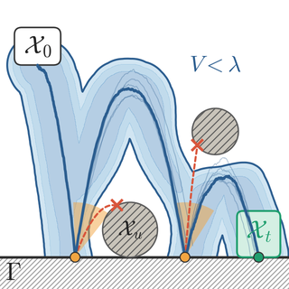
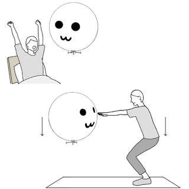
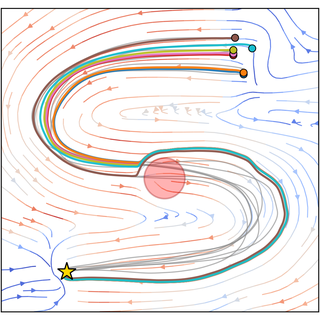
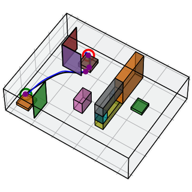
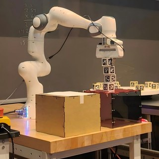
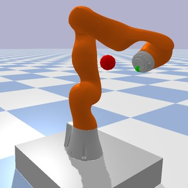
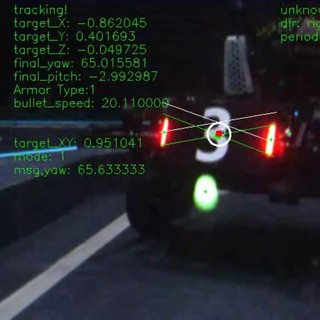

|
Tianyi Xia I'm a master's student in Robotics at the GRASP Lab, University of Pennsylvania, advised by Nadia Figueroa and Nikolai Matni. I work on safe and stable robot learning: learning motion policies from demonstrations and giving them provable stability and safety guarantees with tools from control theory, such as Lyapunov functions, control barrier functions, and reachability analysis. I received my B.S. in Information and Computing Science and B.Eng. in Cyberspace Security from Harbin Institute of Technology, and was a visiting student at UC Berkeley and UC San Diego. I have also worked on human–robot interaction at the Pervasive HCI Group, Tsinghua University. |

|
ResearchMy research focuses on developing safe, learning-based control for harmonious human–robot interaction. |
|
 |
Reach-Avoid Certificates for Contact-based Stochastic Hybrid Systems
Tianyi Xia, Ryan K. Cosner American Control Conference (ACC), 2027 (under review) paper Introduced reach-avoid contact certificates that guarantee, over an infinite horizon and with a prescribed probability, that a stochastic hybrid system controlled only through its resets reaches the target before the unsafe set. Certificates are found by linear programming and turned into a pointwise safety filter for arbitrary nominal controllers. |

|
A Reachability-based Safety Certificate for Dynamical System Motion Policies
Aditya Vats*, Tianyi Xia*, Nadia Figueroa IEEE Transactions on Robot Learning (T-RL), 2026 (under review) Spotlight, IROS 2026 Workshop on Hybrid Architectures for Embodied Autonomy paper Developed a reachability-based safety certificate for DS motion policies that reduces the infinite-horizon problem to a finite-horizon rollout while provably recovering the maximal forward-invariant safe set. Its look-ahead safety filter avoids the spurious attractors and deadlocks of modulation and CBF methods, validated on five DS classes and a Franka manipulator. |
|
|
Execution-Level Correction for Surgical Robot Automation via Residual Policy Learning from Human Corrections
Kejian Shi, Qingbiao Li, Chunhei Lau, Tianyi Xia, Lei Song, Yonghao Long, Sethu Vijayakumar, Qi Dou IEEE Robotics and Automation Letters (RA-L), 2026 (to appear) paper [One- or two-sentence description] |
|
 |
Understanding Users' Perceptions and Expectations toward a Social Balloon Robot via an Exploratory Study
Chongyang Wang, Tianyi Xia, Yifan Wang, Gang Yu, Zixuan Zhao, Siqi Zheng, Manqiu Liao, Chen Liang, Yuan Gao, Chun Yu, Yuntao Wang, Yuanchun Shi Proceedings of the 38th Annual ACM Symposium on User Interface Software and Technology (UIST), 2025 paper BalloonBot, a helium-balloon social robot that combines the mobility of drones with the safety and approachability of ground robots, evaluated in an exploratory lab study of users' perceptions and expectations. |
Selected Projects |
|
 |
Stable and Safe Neural ODEs
Final Project, MEAM 6230: Learning and Control for Adaptive and Reactive Robots, [2026 Spring] Advisor: Prof. Nadia Figueroa, University of Pennsylvania A Neural ODE motion policy jointly learned with a Lyapunov function, using closed-form CLF/CBF projections to guarantee stability and obstacle avoidance while imitating demonstrations on 2D and 3D environments. report / poster / code |
|
 |
Autonomous Quadrotor Flight through Cluttered Mazes
Course Project, MEAM 6200: Advanced Robotics, [2026 Spring] Advisors: Prof. M. Ani Hsieh and Prof. Camillo J. Taylor, University of Pennsylvania A Crazyflie quadrotor that plans with A* search, follows minimum-jerk splines with a geometric SE(3) controller, and autonomously flies three cluttered mazes in a VICON arena with about 0.13 m tracking error. report / video |
|
 |
Dynamic Pick-and-Place Challenge
Final Project, MEAM 5200: Introduction to Robotics, [2025 Fall] Advisor: Prof. Rachel Holladay, University of Pennsylvania A vision-based Franka Panda pipeline that stacks static blocks and intercepts moving blocks on a rotating turntable by predicting their arrival time. report / video |
|
 |
Viability-Preserving Passive Torque Control for Mobile Base Manipulator
Final Project, MEAM 5170: Control and Optimization with Applications in Robotics, [2025 Fall] Advisor: Prof. Michael Posa, University of Pennsylvania Viability-preserving passive torque control extended to a 9-DoF mobile manipulator for collision-free tracking, running faster and far smoother than a CBF-QP baseline. report / poster |
|
|
Planning, Control, and Learning for Robotics
Course Project, ECE 276B: Planning & Learning in Robotics, [2025 Spring] Advisor: Prof. Nikolay A. Atanasov, University of California, San Diego Dynamic programming, search- and sampling-based motion planning, and receding-horizon control for robot navigation tasks. report / code |
|
 |
Target Tracking and Aiming System in Complex Motion Environment
Algorithm Developer, RoboMaster Team, [2022 Fall – 2023 Summer] National Second Prize and Regional First Place, RoboMaster University Championship 🏆 Vision-based target recognition, camera ranging, and Kalman-filter tracking and prediction, integrated with ROS-based localization, navigation, and obstacle avoidance for autonomous robots. |

|
The Automated Guided Vehicle Based on Jetson Nano for Delivery
Algorithm Developer, Intelligent Car Team, [2022 Spring – 2022 Summer] National Third Prize, National University Students Intelligent Car Race 🏆 A delivery AGV on STM32 and Jetson Nano with lidar–camera SLAM, lane and traffic-light detection, autonomous navigation, and a ROS/Qt visualization interface. report / code |
Education |
|
University of Pennsylvania
M.S.E. in Robotics Advisors: Prof. Nadia Figueroa, Prof. Nikolai Matni |
2025.8 – 2027.5 (Expected) |
|
Harbin Institute of Technology
B.S. in Information and Computing Science B.Eng. in Cyberspace Security |
2021.8 – 2025.6 |
|
University of California, San Diego
Visiting Student Courses: Planning & Learning in Robotics, Linear Control System Theory, Partial Differential Equations |
2025.3 – 2025.6 |
|
University of California, Berkeley
Visiting Student Courses: Introduction to AI, Applied Machine Learning, Stochastic Process |
2024.1 – 2024.6 |
MiscellaneaOutside the lab, I've been a devoted FC Bayern Munich fan since 2014. I love traveling, hiking, skiing, and music, and I'm currently picking up Spanish and German for fun. |
|
Last updated: Oct. 2026 |
|